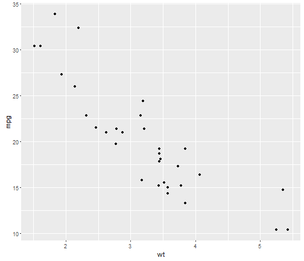
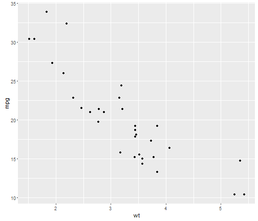

require(ggplot2)
qplot(wt, mpg, data = mtcars)

Pratik Chhapolika
Coursera Project
require(ggplot2)
qplot(wt, mpg, data = mtcars)

## Warning: package 'data.table' was built under R version 3.3.1
## Warning: package 'reshape2' was built under R version 3.3.1
##
## Attaching package: 'reshape2'
## The following objects are masked from 'package:data.table':
##
## dcast, melt